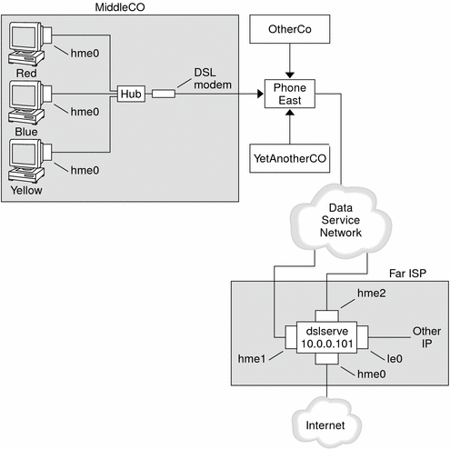

Previous
Previous
Planning for DSL Support Over a PPPoE Tunnel
Some DSL providers require you to set up PPPoE tunneling for your site in order to run PPP over the providers' DSL lines and high-speed digital networks. For an overview of PPPoE, see Support for DSL Users Through PPPoE.
A PPPoE tunnel involves three participants: a consumer, a telephone company, and an ISP. You either configure PPPoE for consumers, such as PPPoE clients at your company or consumers in their homes, or you configure PPPoE on a server at an ISP.
This section contains planning information for running PPPoE on both clients and access servers. The following topics are covered:
Planning information for the PPPoE host and access server
Explanation of the PPPoE scenario that is introduced in Example of a Configuration for a PPPoE Tunnel
For tasks about setting up a PPPoE tunnel, see Chapter 20, Setting Up a PPPoE Tunnel (Tasks).
Before You Set Up a PPPoE Tunnel
Your preconfiguration activities depend on whether you configure the client side or server side of the tunnel. In either instance, you or your organization must contract with a telephone company. The telephone company provides the DSL lines for clients, and some form of bridging and possibly an ATM pipe for access servers. In most contracts, the telephone company assembles its equipment at your site.
Before Configuring a PPPoE Client
PPPoE client implementations usually consist of the following equipment:
Personal computer or other system that is used by an individual
DSL modem, which is usually installed by the telephone company or Internet access provider
(Optional) A hub, if more than one client is involved, as is true for corporate DSL consumers
(Optional) A splitter, usually installed by the provider
Many different DSL configurations are possible, which depend on the user or corporation's needs and the services that are offered by the provider.
Table 16-6 Planning for PPPoE ClientsInformation | Action |
|---|---|
If setting up a home PPPoE client for an individual or yourself, get any setup information that is outside the scope of PPPoE. | Ask the telephone company or ISP for any required setup procedures. |
If setting up PPPoE clients at a corporate site, gather the names of users who are being assigned PPPoE client systems. If you configure remote PPPoE clients, you might be responsible for giving users information about adding home DSL equipment. | Ask management at your company for a list of authorized users. |
Find out which interfaces are available on the PPPoE client. | Run the ifconfig -a command on each machine for interface names. |
(Optional) Obtain the password for the PPPoE client. | Ask users for their preferred passwords. Or, assign passwords to the users. Note that this password is used for link authentication, not for UNIX login. |
Before Configuring a PPPoE Server
Planning for a PPPoE access server involves working with the telephone company that provides your connection to its data service network. The telephone company installs its lines, often ATM pipes, at your site, and provides some sort of bridging into your access server. You need to configure the Ethernet interfaces that access the services that your company provides. For example, you need to configure interfaces for Internet access, as well as the Ethernet interfaces from the telephone company's bridge.
Table 16-7 Planning for a PPPoE Access ServerInformation | Action |
|---|---|
Interfaces that are used for lines from data service network | Run the ifconfig -a command to identify interfaces. |
Types of services to provide from the PPPoE server | Ask management and network planners for their requirements and suggestions. |
(Optional) Types of services to provide to the consumers | Ask management and network planners for their requirements and suggestions. |
(Optional) Host names and passwords for remote clients | Ask network planners and other individuals at your site who are responsible for contract negotiations. The host names and passwords are used for PAP or CHAP authentication, not for UNIX login. |
Example of a Configuration for a PPPoE Tunnel
This section contains an example of a PPPoE tunnel, which is used as an illustration for the tasks in Chapter 20, Setting Up a PPPoE Tunnel (Tasks). Though the illustration shows all participants in the tunnel, you only administer one end, either the client side or server side.
Figure 16-5 Example of a PPPoE TunnelIn the sample, MiddleCo wants to provide its employees with high-speed Internet access. MiddleCo buys a DSL package from Phone East, which, in turn, contracts with service provider Far ISP. Far ISP offers Internet and other IP services to customers who buy DSL from Phone East.
Example of a PPPoE Client Configuration
MiddleCo buys a package from Phone East that provides one DSL line for the site. The package includes a dedicated, authenticated connection to the ISP for MiddleCo's PPPoE clients. The system administrator cables the prospective PPPoE clients to a hub. Technicians from Phone East cable the hub to their DSL equipment.
Example of a PPPoE Server Configuration
To implement the business arrangement FarISP has with Phone East, the system administrator at FarISP configures the access server dslserve. This server has the following four interfaces:
eri0 – Primary network interface that connects to the local network
hme0 – Interface through which FarISP provides Internet service for its customers
hme1 – Interface contracted by MiddleCo for authenticated PPPoE tunnels
hme2 – Interface contracted by other customers for their PPPoE tunnels
Where to Get More Information About PPPoE
Choose from the following:
See Creating PPPoE Tunnels for DSL Support, and the pppoed(1M), pppoec(1M), and sppptun(1M) man pages.